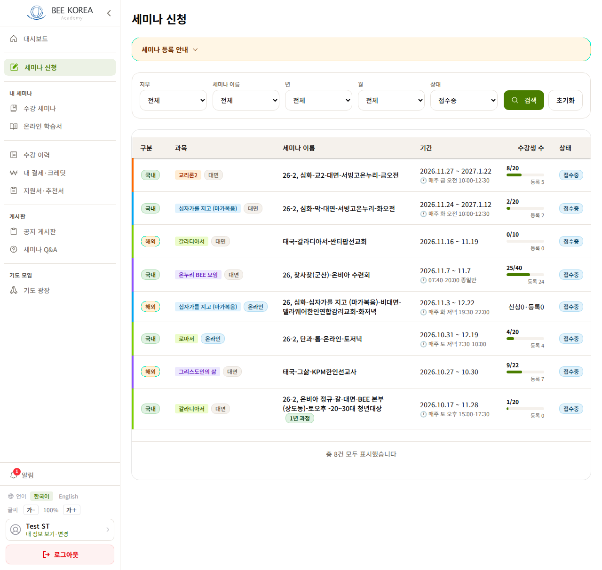
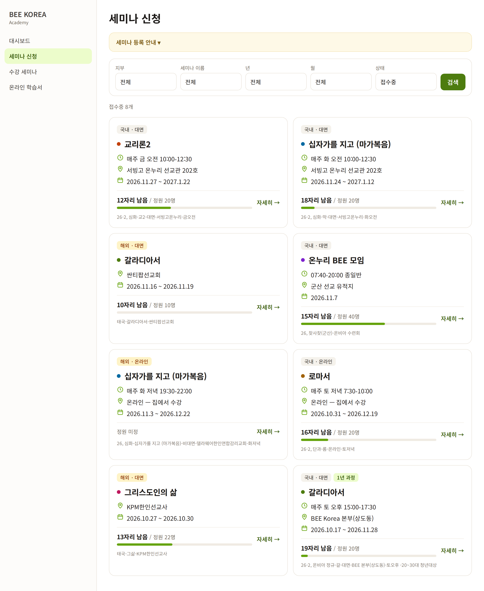
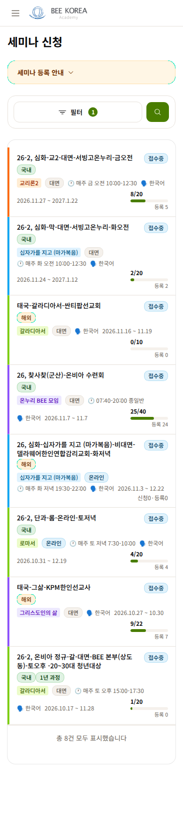
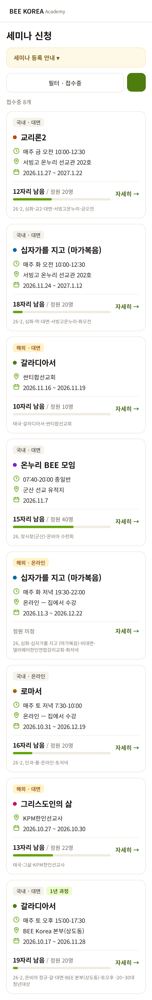

LMS 세미나 목록 — 디자인 시안 1차
2026-10-11 · 학생이 세미나를 고르는 화면 · 지금 화면에 보이는 접수중 8개를 실제 데이터로 그렸습니다 · 아직 적용 전 · 상세 화면(시안, 운영 반영됨)과 같은 「핵심 4칸」
무엇이 바뀌나
- 제목 = 과목 이름 — 관리용 이름(26-2, 심화-교2-…)은 카드 맨 아래 작게. 과목 색은 점으로 남김
- 카드마다 같은 순서 — 언제 → 어디서 → 기간 → 남은 자리. 지금은 휴대폰에서 시간·언어·기간이 카드마다 다른 자리로 줄바꿈
- 장소가 보임 — 지금은 제목 속 글자로만 알 수 있음
- 「8/20 · 등록 5」 → 「12자리 남음 / 정원 20명」 — 남은 자리는 상세 화면·신청 판정과 같은 식(정원 − 신청). 3자리 이하면 「마감 임박」, 다 차면 「정원 마감」
- 상태 칸을 뺌 — 기본 필터가 「접수중」이라 모든 행이 같은 값이었다. 필터를 「전체」로 바꿨을 때만 카드에 상태를 붙인다
- PC 는 2열 카드 — 지금 표는 칸이 7개라 가로로 훑어야 했다. 카드 전체가 눌리는 자리(상세로)
- 필터·등록 안내는 그대로 둔다(이번 범위 밖)
PC


휴대폰


정해 주실 것
- PC 를 2열 카드로 바꿔도 될까요? 한 화면에 보이는 개수는 표보다 적습니다(표 약 8개 → 카드 약 4~6개). 대신 한 장씩 읽힙니다.
- ⚠️ 델라웨어 마가복음(화 저녁 온라인, 11/3 개강)의 정원이 0 입니다. 지금 코드에서는 정원 0 이면 첫 신청부터 「대기 자리 없음」으로 거절됩니다(아직 신청 0건). 정원을 깜빡 안 넣은 것이면 세미나 관리에서 정원을 넣어 주세요 — 제가 넣을까요?
확정되면 목록에 적용하고, 다음은 회원 상세(요약 카드 + 묶음)입니다.